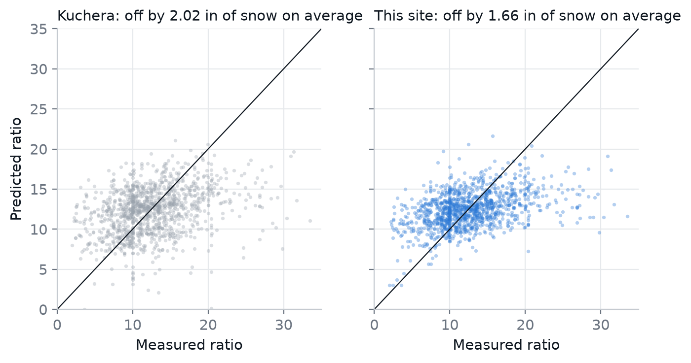
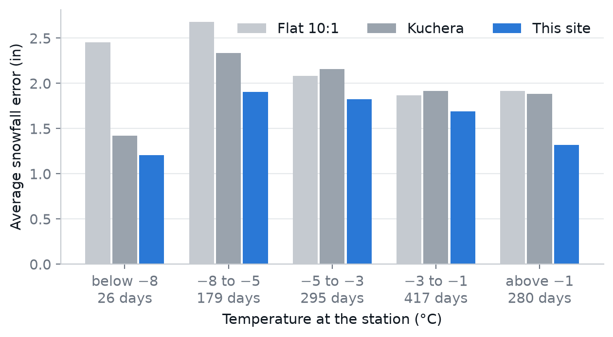
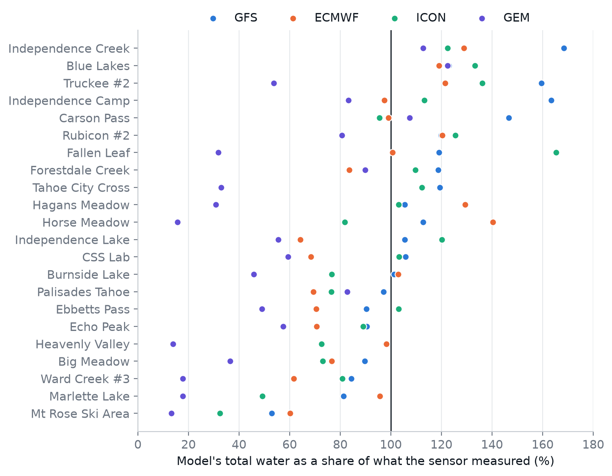

Preferences
Units
The forecast
Data sources
Forecast and maps: Open-Meteo (CC BY 4.0), NOAA, ECMWF, DWD, Environment Canada, USDA SNOTEL, the California Data Exchange Center, Caltrans, OpenStreetMap, OpenSkiMap, and the Sierra, Eastern Sierra, and Bridgeport avalanche centers through avalanche.org.
Tests: NOAA GHCN-Daily and CoCoRaHS hand measurements, USDA SNOTEL sensors, California Data Exchange Center snow pillows, and model archives from Open-Meteo.
Every number here comes from winters or stations the model never saw while it was being fitted. Where something did not work, it says so.
The scorecard
How fluffy the snow is
The snow ratio is inches of snow per inch of water. It is the hardest part to predict and the part most forecasts guess at.
The raw material is 13,124 days of snowfall measured by hand at Sierra stations since 1979. Colder storms make lighter snow, but with a lot of scatter.
 The line is the middle day at each temperature; the band holds the middle half of days.
The line is the middle day at each temperature; the band holds the middle half of days.
The model in use is fitted on 1,197 hand-measured snow days at 44 stations from the five winters that have detailed upper-air data, using temperature, wind, and humidity aloft plus the amount of water.
Given the measured water, it misses the snowfall by 1.66 in on average, against 2.02 in for Kuchera (the common free method) and 2.07 in for a flat 10:1.

Each dot is one station-day, predicted by a model fitted without that winter. A perfect forecast would sit on the line. Neither does: the ratio is noisy, and the model explains only about 15% of its day-to-day variation.

Kuchera does worst in cold storms, where it calls for very light snow that the Sierra rarely delivers.
| Winter held out | Snow days | Kuchera error (in) | This site (in) |
|---|
| 2021–22 | 231 | 2.40 | 2.06 |
| 2022–23 | 487 | 1.93 | 1.46 |
| 2023–24 | 207 | 1.92 | 1.61 |
| 2024–25 | 131 | 1.36 | 1.42 |
| 2025–26 | 141 | 2.47 | 1.97 |
What did not work: training on the full 45-year record. Its upper-air data is coarse and does not line up with the forecast models, so it made the forecasts slightly worse, and it is not used.
Rain or snow
At 5,405 wet days across 22 Tahoe snow sensors, the share of water that fell as snow is the snowpack's water gain divided by the precipitation. The curve in use turns the model's wet-bulb temperature into that share.
 Gray dots are single days. Half the water falls as snow at a wet-bulb temperature of about 1.25 °C.
Gray dots are single days. Half the water falls as snow at a wet-bulb temperature of about 1.25 °C.
Three methods were tried and came out tied: about 2.4 mm of water miscalled per wet day, half the 4.9 mm you get by calling everything snow.
A mistake we caught: an earlier version of this test read the sensors' daily records one day off, which made every method look much worse and one winter look broken. Lining the dates up fixed both.
How much water
Weather models are consistently too dry or too wet at particular spots in the mountains. Each dot below is one model's total water at one sensor as a share of what the sensor measured (52,206 model-days).

100% is a perfect total. At Mt Rose every model delivers well under half the measured water.
Correcting each model to its nearest sensor improves every measure below, most of all the big storms.
Guards: a corrected day is never allowed to exceed the wettest day its sensor has recorded, and the blend takes its amount from the middle models, so one model with a runaway correction cannot carry the total. (One model delivers 13% of the measured water at Mt Rose; uncapped, its correction once turned 43 mm into 247.)
Around Mammoth
Mammoth gets its own correction, fitted to 10 snow sensors along the crest from Virginia Lakes to Bishop Creek and tested the same way on the 2024, 2025, and 2026 winters. The Tahoe correction is not used there: on these sensors it did worse than no correction.
Mammoth Mountain and Sherwin Ridge use the Mammoth Pass sensor, 2 km south of the summit. The models' shares of its measured water: GEM 69%, ECMWF 88%, ICON 101%, GFS 133%. Those misses offset, so at this one sensor the corrected blend only ties the raw one; the correction is kept because it makes each model right on its own.
Matterhorn Peak and Dana Plateau use the sensors nearest them: Slide Canyon, 4 km west across the crest, and Dana Meadows, 5 km southwest.
June Mountain, Carson Peak, and Mt. Whitney have no working sensor nearby and are left uncorrected. The record of a sensor that has since gone quiet (Gem Pass) says a correction borrowed from Mammoth Pass would make them worse.
The sensors: most are state snow pillows that are not quality-controlled the way SNOTEL is. Adding up their daily rises counts sensor jitter as snow (about 20% too much over a week), so readings are smoothed and small dips ignored before any of this is fitted or scored.
Wind gusts
The weather models' own gust field runs low in the mountains, so above the base this site estimates gusts from the faster air 500 m higher up, which is where gusts come from. The method is the same at every mountain.
It could only be checked at one place. Testing a gust forecast takes a station that records gusts hour by hour, and the Palisades snow sensor (8,010 ft) is the one free station in the area with a usable record: 29,068 hours over five winters. There, the wind 500 m up tracks the measured gusts better than the wind at the sensor's own height: correlation 0.79 against 0.73, and an average miss of 5.7 mph against 6.7.
The limit: that sensor sits in a sheltered spot and averages only 7 mph, and the one other free sensor is more sheltered still. So the method's shape is tested, at Palisades, but how strong gusts get on an exposed ridge is not tested anywhere. Treat ridge gusts as estimates at every mountain.
What is not tested yet
These are backtests against model archives. Live forecasts made by this site are being saved and will be graded against the sensors by lead day as they come due, including the ± ranges. The correction is fitted on short-range model data and applied to every lead time, which is untested beyond a day or two.
Water Four weather models (GFS/HRRR, ECMWF, ICON, and GEM) forecast the water at each resort.
Snow Each hour's water becomes snow in two steps: how much falls as snow at that elevation, and how fluffy it is.
The ± One standard deviation across about 140 alternate forecasts (ensemble members) run through the same steps. Days past the fifth are shown greyed or faded: at that range the numbers are a rough guide to whether a storm is coming, not to how much, and past day 10 only two of the four models still run.
One water amount per resort Summit and base differ only by snow level and fluffiness, not by extra precipitation up high.
Wet, medium, dry The standard classes used by forecasters everywhere, not Tahoe's own scale: wet is under 9 inches of snow per inch of water, dry is over 15, medium is between. Dry snow is uncommon here.
Temperature The free air at that elevation, averaged over the lift hours for a day.
Feels like The standard wind chill for that temperature and wind; with little wind or above 50°F it is just the temperature.
Wind The free-air wind at that elevation, close to what an exposed ridge sees. The barb points to where it blows from, taken near crest height (about 10,000 ft) for every elevation; a long feather is 10 knots, a short one 5. Gusts above the base are estimated from the faster air 500 m higher up, the same way at every mountain. The method was checked against five winters of measured gusts at the Palisades snow sensor, the one station in the area that records them; no free ridge-top station exists to check how strong the gusts get.
Storm totals Snowfall added up until a full day passes with none; after that the count starts over, since older snow is no longer new.
A ski day From 4 pm the previous day to 4 pm, so it holds the overnight snow and the snow that falls while the lifts turn.
Status The weather line is our own reading of the forecast for one ski day, not anything the resort has said. It flags wind holds from summit wind by rule of thumb: on exposed mountains (Kirkwood, Mt. Rose, Palisades, Alpine, Sugar Bowl, and Mammoth) possible from gusts of 45 mph, expected from 55, and closures from 75. Those are Palisades' own published figures for its ridgetop gusts with 5 mph taken off each, to err on the side of warning. Average mountains are flagged 5 mph later and sheltered ones (Northstar and Homewood) 15 mph later. It also flags late openings after 6 in of overnight snow up high, rain down low, and extreme cold (a wind chill of −20°F or lower). Temperature and wind are the resort's own readings when today is showing and it publishes them (marked live; Sierra-at-Tahoe's single reading is near mid-mountain), and the forecast otherwise. Lift and trail counts come live from the resort (for Mt. Rose and Sugar Bowl, read from its status page), including any holds it has declared, in its own words.
Powder score A 0 to 10 rating of each ski day: depth × ratio × wind × layering × rain × timing.